Section 1.2 Invitation to Explore
Exploration 1.2.1. Tiling Rectangles with Polyominoes.
Although this task is to fill a box, you are encouraged to think outside the box as you do this activity. You will find that a willingness to take chances and try out different strategies will be essential to your success in this course. Taking time to reflect as you respond to the "why" questions and sharing your ideas with your classmates will also contribute greatly to your learning. Have fun!
(a)
Fill the blue square with non-overlapping copies of the green L-shaped tetronimo. How many tetrominos are required?
This task may be completed with pen and paper or using an interactive tool.
(b)
Just as a domino consists of two squares joined at an edge, a tetromino is a flat figure created by joining four congruent squares along edges. Pictured below are the four other tetrominoes, an I-shape, a Z-shape, a T-shape, and a small square. Like the L-shape, some of these can cover the larger square without overlaps or gaps. Identify which tetrominoes will tile one of the larger squares and show how this can be done. If there are any tetrominoes which cannot tile the square alone, explain why you believe the tiling is impossible. Four larger squares are provided; try to tile one with the I-shape, one with the Z-shape, etc.
(c)
Since a tetromino is formed by joining four unit squares, each tetromino has an area of four square units, as illustrated here.

What is the area of the square that you filled with tetrominoes?
(d)
Similarly, we define a pentomino to be a figure formed by joining five congruent squares along edges. One pentomino is pictured. Create new pentominoes by copying and moving the provided square. Note that if two pentominos are reflections or rotations of each other we consider them to be the same pentomino.
Hint.There are twelve different pentominoes. Did you find them all?
The pentominoes may be labeled as F, I, L, N, P, T, U, V, W, X, Y, and Z. Can you figure out which is which?
(e)
Use some of the pentominoes you created to build solid rectangles.
Hint.
An interactive Polypad activity can be accessed via Polypad by Mathigon using the link
. 4 
(f)
Are there any rectangles that cannot be filled using only pentominoes? Why?
(g)
As you participated in this exploration, what did you wonder? What did you notice about area?
Hint.There is no right or wrong answer here! Write something!
The purpose of
Exploration 1.2.1 is two-fold. It introduces the exploratory nature of the course and it suggests a few important geometric facts that we will use as our initial geometrical foundation.
Principle 1.2.1.
The area of a closed figure in the plane is the number of unit squares needed to fill the figure.
Principle 1.2.2.
The area of a rectangle is the product of its length and width; in symbols, \(A=\ell \times w\text{.}\)
Principle 1.2.3.
If a region can be cut into non-overlapping sections, the area of the whole region is equal to the sum of the areas of the sections.
Hopefully as you worked through this task, you allowed yourself to experiment with different arrangements of squares and polyominoes. This openness to exploration is essential to mathematical thinking. Phrases like "what if" or "I wonder" arise often as mathematicians create and make sense of new ideas.
In addition, mathematics is a social activity. When we notice patterns and make conjectures, we share our ideas with others and use logic to make convincing arguments. For over 2500 years, mathematicians have been adding to the body of mathematical knowledge; some of which has been shared with you during your studies. The field of mathematics continues to grow.
Unfortunately, most students have had little opportunity to creatively explore in their mathematics classes. You have probably memorized formulas and performed calculations in many of your mathematics classes. While formulas and calculations are useful tools in mathematics, they are not the essence of mathematics and can often be done via a computer. In this course, we will develop the creative thinking, reasoning, and problem-solving practices that set humans apart computers and are valued by employers. We will think outside the box, make predictions, and wonder why. Different approaches and strategies are encouraged. Relax and have fun exploring mathematics!
mathigon.org/polypad/embed/OqM1coKhvKsMuw
mathigon.org/polypad/deIUjqp9tTSpaQ
mathigon.org/polypad/lejfSv8Xt8FxJA
mathigon.org/polypad/TDXu2UNNZgwh2Q